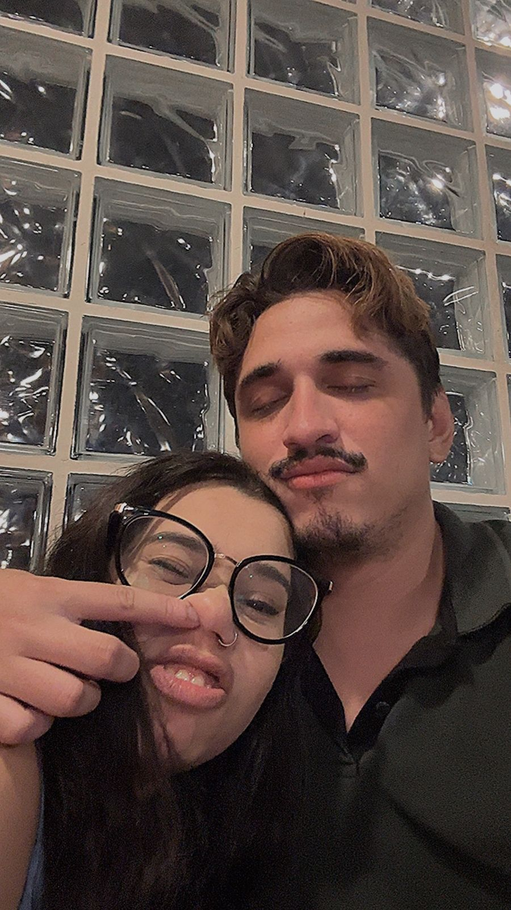

Este site foi desenvolvido única e exclusivamente para Mariana.
Quem é Mariana, você me pergunta?
Mariana é um ser de 1,55m de altura, que tem um sorriso lindo e uma bunda mais bonita ainda 😏

Para a Mariana mais Mariana do mundo!
Essa é a Mariana ☝️ Viu como ela é linda e engraçada?
Espero que você goste deste presente digital feito especialmente para você
Você aceita dar o cuzinho pra mim no dia 17/01?